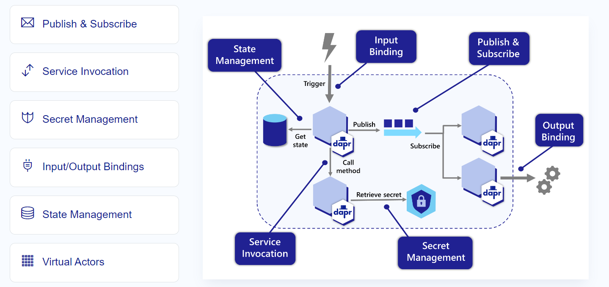

Dapr 在 2019 第一次公開時，那時候版本還是 0.1 時，就有留意到，想不到幾年後，不僅進入 CNCF 還變成很多人推薦的框架，所以重新拾回研究一下 Dapr 的架構及如何使用在工作上
為什麼會回來看 Dapr，最主要的原因是目前的工作，系統都是以微服務的形式跑在自架的 K8s 上，一旦到達一個規模整個管理跟實做上要考慮的事情變的相對複雜，而 Dapr 可以降低這部分的工作並以一致的模式套用在不同的語言跟技術框架上
What is Dapr
官網上是這樣子介紹的
APIs for building portable and reliable microservices
Leverage industry best practices and focus on your application’s logic.

從圖片上可以知道 Dapr 是走 sidecar 模式，但好家在他底層是使用 go 實做，執行起來也不會太笨重，並提供簡化不少原系統要處理的東西。而且 Dapr sidecar 之間的溝通是採用 gRPC 的模式來降低整體的負擔，將效能影響降至最低
Dapr 架構

從這張圖尚可知道，原本的應用程式可透過 HTTP 或 gRPC 的方式與 Dapr 的元件溝通，在這模式下，應用程式間的互動會由 代理人 Dapr 來處理，之後我會說明為什麼我會將其定義成 代理人 的原因
Dapr 提供幾個積木供我們使用 (如下表)，讓我們有抽換背後對應的服務 (抽象化)
| Building block | Description |
|---|---|
| State management | Support contextual information for long running stateful services. |
| Service invocation | Invoke direct, secure service-to-service calls using platform agnostic protocols and well-known endpoints. |
| Publish and subscribe | Implement secure, scalable pub/sub messaging between services. |
| Bindings | Trigger code from events raised by external resources with bi-directional communication. |
| Observability | Monitor and measure message calls across networked services. |
| Secrets | Securely access external secret stores. |
| Actors | Encapsulate logic and data in reusable actor objects. |

一開始有提到 Dapr 是使用 sidecar 模式與 application 做互動，所以架構會長的像這樣
Hosting Environment
Dapr 的執行環境有分 self-hosted 和 container 模式

所以在本機開發環境如果沒有 docker 也還是可以透過 self-hosted 的模式進行開發，不會影響之後的部屬，self-hosted 可透過 Dapr cli 來完成相關的操作 (Dapr CLI installer)
Service Mesh & Dapr
Service Mesh 是另外一個偉大的坑，其負責範圍其實很多，科普一下
服務網格是一個可設定的基礎結構層，內建功能可處理服務對服務通訊、復原、負載平衡和遙測擷取。 它會將這些考慮的責任移出服務，並移入服務網格層。
Dapr 也遵循一樣的模式，所以接下來的問題會是 Dapr 可以取代原本的 service mesh 嗎? 其實 Dapr 可以與原有的 Service Mesh 共存，負責的業務範圍會不太一樣，Dapr 提供系統服務，service mesh 提供服務間的網路溝通